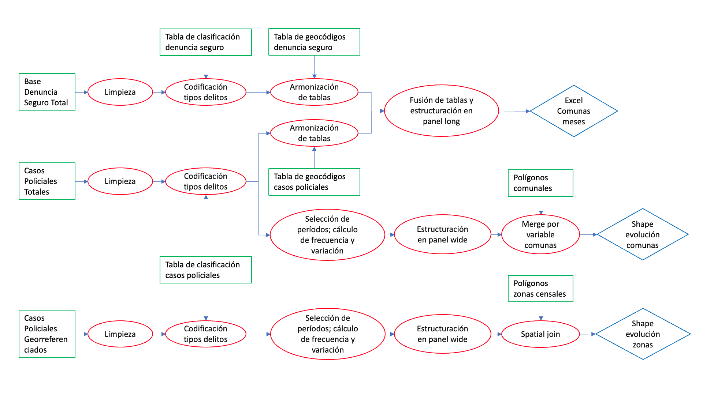
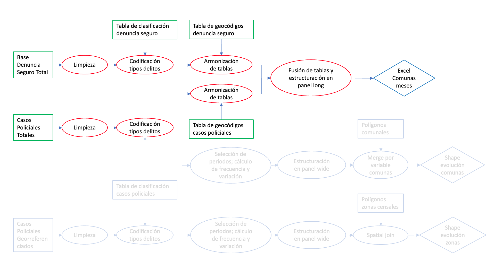
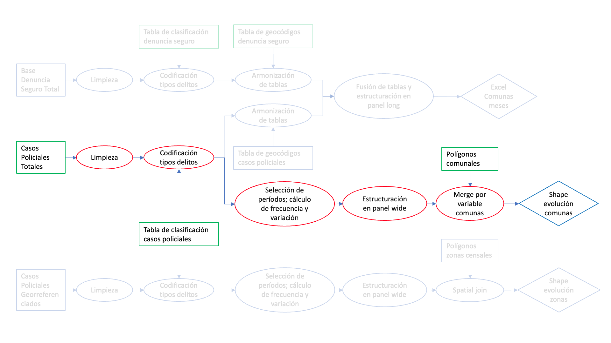
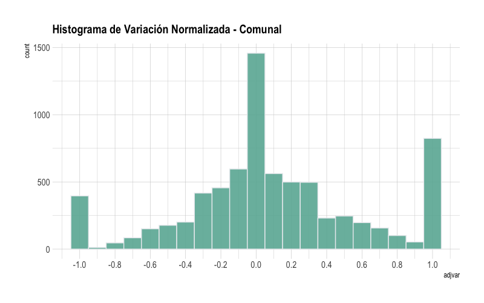
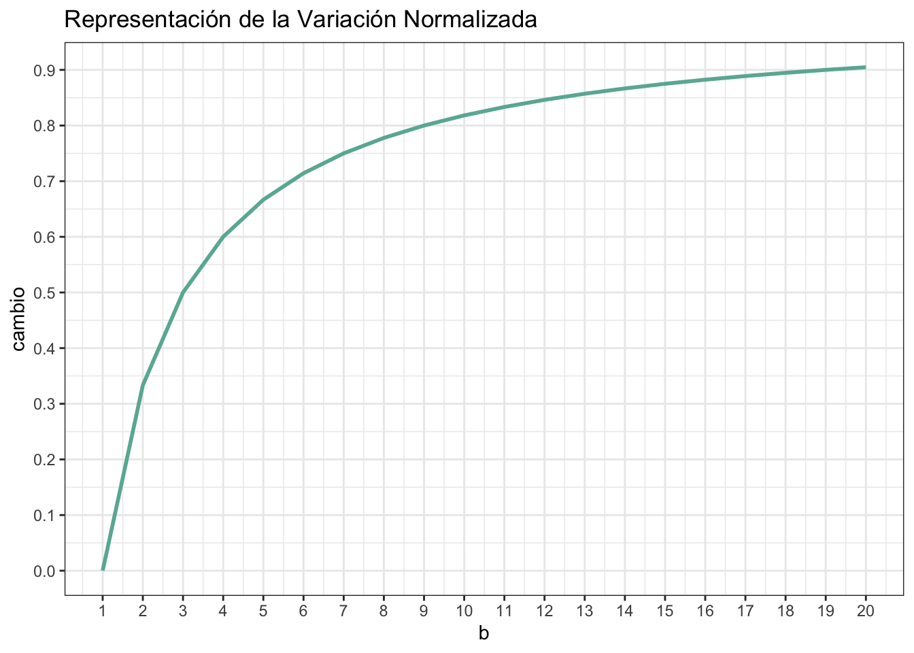
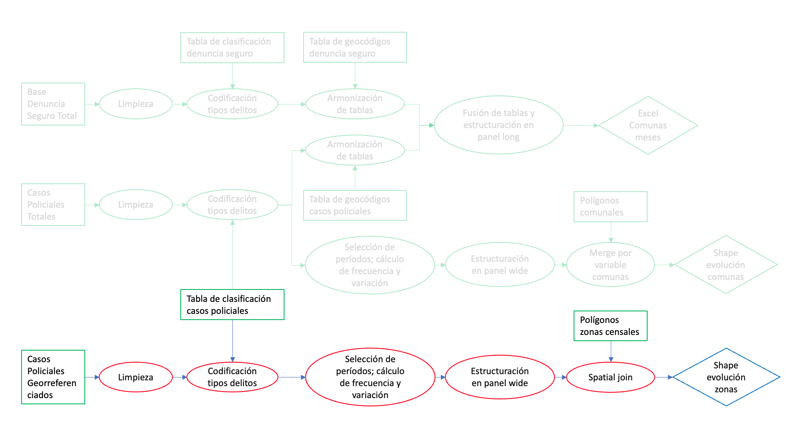
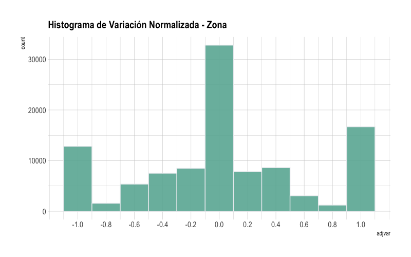

# librerías ---------------------------------------------------------------
library(openxlsx)
library(dplyr)
library(lubridate)
library(sf)5 Workflow general
Flujo de Trabajo Completo
5.1 Introducción

En este capítulo se realizará un flujo de trabajo general para la consolidación de tres productos generales que serán utilizados para análisis futuros como también para el trabajo final. El flujo de trabajo general se encuentra en la Figure 5.1, donde se obtendrá los siguientes productos:
- Excel por Comuna y Mes
- Evolución por Comunas espacial
- Evolución por Zonas espacial
A continución se procede a aplicar de forma detallada los procedimientos para obtener cada uno de estos productos.
5.2 Excel por Comuna y Mes

Este producto se pretende consolidar los datos de Casos Policiales Totales y la base de Denuncia Seguro en un archivo que represente la frecuecia de delitos, previamente limpiados y homolgados, a escala comunal y por meses por meses. El resultado será en formato excel para facilitar el proceso de análsis posterior. El flujo de trabajo en específico para generar este producto se representa en Figure 5.2.
Librerías de uso general
5.2.1 Procedimiento a base de Denuncia Seguro
Lectura
# Lectura denuncia seguro
denuncias <- readRDS("data/datos_trabajo_final/denuncia_seguro.rds") %>%
st_as_sf() %>% st_drop_geometry() %>%# Descartar información espacial
as_tibble() # trasformación para visualizar mejorLimpieza
En esta etapa se crea un variable temporal de unifica el año y mes que se denominará MESES a través de una suma directa, lo que aumentará la eficiencia al momento de realizar consultas.
denuncias <- denuncias %>% rename(NOM_REGION = REGION) %>%
mutate(MESES = (ANIO*100) + MES) # agrega de año y mes (muy eficiente)
# visaluzación de transformación de la fechas
denuncias %>% select(INCIDENTE, ANIO, MES, MESES) %>% head(5)# A tibble: 5 × 4
INCIDENTE ANIO MES MESES
<dbl> <dbl> <dbl> <dbl>
1 332666 2017 12 201712
2 332690 2017 12 201712
3 290692 2017 4 201704
4 290700 2017 4 201704
5 290704 2017 4 201704Codificación de Tipos de Delitos
# Lectura de clasificación de denuncia seguro
clasificaden <- read.xlsx(
"data/datos_trabajo_final/clasificacion_denuncias.xlsx",
sheet = "tipos") %>%
select(-tip) # eliminación de columna
clasificaden %>% as_tibble() %>% head(5)# A tibble: 5 × 2
SUBDELITO TIPO
<chr> <chr>
1 ABANDONO DE NIÑOS.ART. 346 al 351.. Abandono famil…
2 ABIGEATO. ART. 448 BIS Hurtos y Robos
3 ABORTO COMETIDO POR FACULTATIVO. Violencia fami…
4 ABORTO CONSENTIDO. ART. 342 Nº 3 y 344.. Violencia fami…
5 ABORTO SIN CONSENTIMIENTO. ARTS. 342 Nº 2 y 342 Nº 1. Art. 343 Violencia fami…Agregar tipología a base de Denuncia seguro, donde la variable key para hacer la unión es SUBDELITO.
denuncias <- denuncias %>% left_join(clasificaden, by = "SUBDELITO")
denuncias %>% arrange(MESES) %>% select(INCIDENTE,MESES, TIPO) %>% head(5)# A tibble: 5 × 3
INCIDENTE MESES TIPO
<dbl> <dbl> <chr>
1 130070 201401 Drogas
2 129250 201401 Armas
3 129439 201401 Drogas
4 130672 201401 Drogas
5 129311 201401 Hurtos y RobosArmonización de Tablas
En esta etapa se realizará unificación de los nombres de comunas y regiones para todas las bases que se van a trabajar, y como la base Denuncia Seguro difieren de la base de Casos Policiales, se deben homologar haciendo uso de las siguientes tablas:
- Tablas de nombres de comunas:
indcom <- read.xlsx("data/datos_trabajo_final/comunas_carabineros_spd.xlsx")
indcom %>% as_tibble() %>% head(5)# A tibble: 5 × 2
NOM_COMUNA COMUNA
<chr> <chr>
1 ALGARROBO Algarrobo
2 ALHUÉ Alhué
3 <NA> Alto Biobío
4 <NA> Alto del Carmen
5 ALTO HOSPICIO Alto Hospicio - Tablas de nombres regiones:
indreg <- read.xlsx("data/datos_trabajo_final/regiones_carabineros_spd.xlsx")
indreg %>% as_tibble() %>% head(5)# A tibble: 5 × 2
REGION NOM_REGION
<dbl> <chr>
1 1 Región de Tarapacá
2 2 Región de Antofagasta
3 3 Región de Atacama
4 4 Región de Coquimbo
5 5 Región de Valparaíso Unificación de Denuncia Seguron con tablas de nombres
denuncias <- denuncias %>% left_join(indcom, by = "COMUNA",
relationship = "many-to-many")
denuncias <- denuncias %>% left_join(indreg, by = "NOM_REGION")
denuncias %>% select(COMUNA, NOM_COMUNA, NOM_REGION, REGION) %>% head(5)# A tibble: 5 × 4
COMUNA NOM_COMUNA NOM_REGION REGION
<chr> <chr> <chr> <dbl>
1 La Granja LA GRANJA Región Metropolitana de Santiago 13
2 Concón CONCÓN Región de Valparaíso 5
3 Coquimbo COQUIMBO Región de Coquimbo 4
4 San Bernardo SAN BERNARDO Región Metropolitana de Santiago 13
5 La Serena LA SERENA Región de Coquimbo 4Selección de variables
denuncias <- denuncias %>%
mutate(CLASIFICAC = "MENSAJE") %>%
select(REGION,NOM_REGION,COMUNA,NOM_COMUNA,MESES,TIPO,CLASIFICAC)5.2.2 Procedimiento a base de Casos Policiales
Lectura
Para efectos de este libro digital se tomará una muestra de los casos policiales de 10000 a nivel nacional.
casos <- readRDS("data/datos_trabajo_final/delitos_all_categ.rds")
casos %>% st_drop_geometry() %>% count(TIPO)Limpieza
# Limpieza Casos Policiales
casos <- casos %>%
st_drop_geometry() %>%
select(-NOM_REGION, -COMUNA) %>% # eliminar columnas
mutate(REGION = as.numeric(REGION),
MESES = year(FECHA_DEL)*100 + month(FECHA_DEL),
COMUNA = floor(as.numeric(ZONA)/1000000))Se debe revisar si los todos los casos policiales tienen su tipología asignada (sin valores NA) y que los nombres estén escritos de forma correcta. Lo primero se realizará revisión de las tablas de frecuencia y revisar si existen problemas.
# Asignación manual delitos con problemas tipo
casos %>% count(TIPO) # llama la atención Tipo de baja fecuencia TIPO n
1 Abandono familia 141045
2 Abuso Sexual 46196
3 Abuso y Corrupción 49908
4 Aprehensión 543758
5 Armas 72486
6 Comercio Ilegal 180564
7 Comercio ilegal 226
8 Daños 555312
9 Delitos económicos 324130
10 Desacato 70828
11 Desórdenes 2428653
12 Drogas 120777
13 Hallazgo muertes 46853
14 Hallazgo vehículo 123594
15 Homicidios 3656
16 Hurtos y Robos 1185340
17 Lesiones graves 213620
18 Presunta desgracia 184117
19 Robo domicilio 270370
20 Robo vehículos 542705
21 Robo violento 417117
22 Secuestros 1883
23 Trata personas 39211
24 Tránsito 137106
25 Violencia familiar 716175
26 <NA> 5En este caso podemos observar que existen dos Tipos que hacen referencia a lo mismo Comercio Ilegal y Comercio ilegal.
En la base de casos original tambien existen delitos que no tienen tipología asignada correspondiente a NA, enconces se verificaremos si existen valores faltantes mediente la siguiente consulta:
# ver NA
casos %>%
filter(is.na(TIPO)) %>% #casos con Tipo NA
pull(DELITO) # mostrar los delitos[1] "BOTILLERIA,SUPERMERC.,MINIMARKET QUE EXP.LICOR CONSUMIDO INT.LOCAL S/P"
[2] "ROBO DE VEHICULO MOTORIZADO POR SORPRESA, VIOLENCIA O I_"
[3] "ROBO CON VIOLENCIA ART.436 INC 1 433,438,439"
[4] "VIOLENCIA INTRAFAMILIAR OTROS (LESIONES PSICOLOGICAS O LEVES)"
[5] "VIOLENCIA INTRAFAMILIAR OTROS (LESIONES PSICOLOGICAS O LEVES)" Para solucionar lo anterior se utilizará un método eficiente de buscar y reemplazar usando la función case_when() como se muestra a continuación:
casos <- casos %>%
mutate(TIPO = case_when(
DELITO == "BOTILLERIA,SUPERMERC.,MINIMARKET QUE EXP.LICOR CONSUMIDO INT.LOCAL S/P" ~ "Desórdenes",
DELITO == "ROBO DE VEHICULO MOTORIZADO POR SORPRESA, VIOLENCIA O I_" ~ "Robo vehículos",
DELITO == "ROBO CON VIOLENCIA ART.436 INC 1 433,438,439" ~ "Robo violento",
DELITO == "VIOLENCIA INTRAFAMILIAR OTROS (LESIONES PSICOLOGICAS O LEVES)" ~ "Violencia familiar",
TIPO == "Comercio Ilegal" ~ "Comercio ilegal",
.default = TIPO
))Revisión de cambios ejecutados correctamente
casos %>% count(TIPO) TIPO n
1 Abandono familia 141045
2 Abuso Sexual 46196
3 Abuso y Corrupción 49908
4 Aprehensión 543758
5 Armas 72486
6 Comercio ilegal 180790
7 Daños 555312
8 Delitos económicos 324130
9 Desacato 70828
10 Desórdenes 2428654
11 Drogas 120777
12 Hallazgo muertes 46853
13 Hallazgo vehículo 123594
14 Homicidios 3656
15 Hurtos y Robos 1185340
16 Lesiones graves 213620
17 Presunta desgracia 184117
18 Robo domicilio 270370
19 Robo vehículos 542706
20 Robo violento 417118
21 Secuestros 1883
22 Trata personas 39211
23 Tránsito 137106
24 Violencia familiar 716177Codificación de Tipos de Delitos
Este paso ya fue realizado anteriormente y ya está realizado en base de Casos Policiales, en caso que se deba realizar nuevamente esta operación se recomienda revisar Section 2.7
Armonización de Tablas
casos <- casos %>% left_join(indreg, by = "REGION")
casos <- casos %>%
filter(!is.na(NOM_COMUNA)) Guardar resultados intermendios, ya que nos ayudaràn para el cálculos a nivel de ZONAS censales.
saveRDS(casos, "data/datos_trabajo_final/resultados/casos_clean.rds")Selección de variables
casos <- casos %>%
select(REGION,NOM_REGION,COMUNA,NOM_COMUNA,MESES,TIPO,CLASIFICAC)5.2.3 Fusión de tablas y estructuración en panel long
Unión de las tablas
hechos <- rbind(casos,denuncias)Contabilizar los Delitos
hechoscomunames <- hechos %>%
group_by(REGION,NOM_REGION,COMUNA,NOM_COMUNA,MESES,CLASIFICAC,TIPO) %>%
summarise(HECHOS = n(), .groups = "keep")
# hechoscomunamesfiltrar por fecha desde enero del 2017, encones podríamos filtar con la fechas superror al número 201700
hechoscomunames <- hechoscomunames %>%
filter(MESES > 201700)
# hechoscomunames5.2.4 Guardar los resultados en Excel
# Guardar Excel
write.xlsx(hechoscomunames,
"data/datos_trabajo_final/resultados/hechoscomunames.xlsx",
rownames = F)
saveRDS(hechoscomunames,
"data/datos_trabajo_final/resultados/hechoscomunames.rds")5.3 Evolución por Comunas

Con el objetivo de medir la evolución de casos policiales en dos periodos de tiempo, se contruirá un indicador de variación de frecuencia a nivel comunal con representación espacial como punto y polígono.
De acuedo al diagrama de flujo de esta subsección Figure 5.3 se utilizará los resultados limpieza y codificación de tipos de delitos de casos policiales realizados anteriormente.
Primeramente se descartará la información de Denuncia Seguro, dejado solo la clasificación de “DENUNCIA” y “DETENCIÓN”
delcomuna <- hechoscomunames %>%
filter(CLASIFICAC %in% c("DENUNCIA","DETENCION"))Selección de Periodos, cálculo de frecuencias y variación
Tabla de medidas estadísticas de frecuencia de delitos
varianzas_base <- delcomuna %>%
group_by(COMUNA, TIPO) %>%
summarise(varianza = sd(HECHOS),
cantidad = sum(HECHOS), .groups = "keep")
head(varianzas_base)# A tibble: 6 × 4
# Groups: COMUNA, TIPO [6]
COMUNA TIPO varianza cantidad
<chr> <chr> <dbl> <int>
1 10101 Abandono familia 0 4
2 10101 Abuso y Corrupción 0 2
3 10101 Aprehensión 0.354 9
4 10101 Armas 0 3
5 10101 Comercio ilegal 0 2
6 10101 Daños 0.316 11- Periodo 1
ini <- delcomuna %>%
filter(MESES %in% 201707:201712) %>%
group_by(COMUNA, TIPO) %>%
summarise(inicio = sum(HECHOS), .groups = "keep")- Periodo 2
fin <- delcomuna %>%
filter(MESES %in% 202207:202212) %>%
group_by(COMUNA, TIPO) %>%
summarise(fin = sum(HECHOS), .groups = "keep")- Consolidación
adjvar <- varianzas_base %>%
left_join(ini, by = c("COMUNA", "TIPO")) %>%
left_join(fin, by = c("COMUNA", "TIPO")) %>%
mutate_if(.predicate = is.numeric,
.funs = function(x) ifelse(is.na(x), 0, x)) # si es NA -> 0- Indicador de Variación
adjvar <- adjvar %>%
mutate(adjvar = (fin-inicio)/(fin+inicio)) %>%
mutate_if(.predicate = is.numeric,
.funs = function(x) ifelse(is.na(x), 0, x))
adjvar# A tibble: 2,076 × 7
# Groups: COMUNA, TIPO [2,076]
COMUNA TIPO varianza cantidad inicio fin adjvar
<chr> <chr> <dbl> <int> <dbl> <dbl> <dbl>
1 10101 Abandono familia 0 4 0 1 1
2 10101 Abuso y Corrupción 0 2 1 0 -1
3 10101 Aprehensión 0.354 9 4 0 -1
4 10101 Armas 0 3 0 0 0
5 10101 Comercio ilegal 0 2 0 0 0
6 10101 Daños 0.316 11 1 0 -1
7 10101 Delitos económicos 0 9 0 1 1
8 10101 Desacato 0 3 1 0 -1
9 10101 Desórdenes 0.648 67 6 6 0
10 10101 Drogas 0 1 0 0 0
# ℹ 2,066 more rows- Histograma de las diferencias normalizadas entre periodos

library(hrbrthemes)
p <- adjvar %>%
ggplot( aes(x=adjvar)) +
geom_histogram( binwidth=0.1,
fill="#69b3a2", color="#e9ecef", alpha=0.9) +
scale_x_continuous(breaks = seq(-1, 1, by = 0.2))+
ggtitle("Histograma de Variación Normalizada (muestra)") +
theme_ipsum() +
theme(
plot.title = element_text(size=15)
)
p- Relación del valor normalizado con la diferencia real

var_max <- max(adjvar$fin-adjvar$inicio, na.rm = T)
a <- 1
b <- 1:20
data <- expand_grid(a, b) %>%
mutate(cambio = (b-a)/(a+b))
v <- ggplot(data = data, aes(x = b, y = cambio))+
geom_line(color = "#69b3a2", linewidth =1)+
scale_y_continuous(breaks = seq(0, 1.2, by = 0.1))+
scale_x_continuous(breaks = seq(0, 20, by = 1))+
ggtitle("Representación de la Variación Normalizada")+
theme_ipsum()+
theme_bw()
vEstructuración en Panel Wide
En este paso cada Tipo de delitos será columna entonces los nombres se deben abreviar, pero de una forma segura, evitando la signación manual. Por lo anterior, este procedimiento se realizarà mediante un diccionario de abreviaciones, de la siguiente forma:
# renombrar TIPO con diccionario
abrev_tipos <- read.xlsx("data/datos_trabajo_final/abreviaciones.xlsx")
abrev_tipos Abreviacion Tipo.delito
1 AbCorr Abuso y Corrupción
2 AbFam Abandono familia
3 AbSex Abuso Sexual
4 Apreh Aprehensión
5 Armas Armas
6 ComIl Comercio ilegal
7 Danos Daños
8 DelEc Delitos económicos
9 Desac Desacato
10 Desor Desórdenes
11 Droga Drogas
12 HallMu Hallazgo muertes
13 HallVe Hallazgo vehículo
14 Homic Homicidios
15 HuRob Hurtos y Robos
16 LesGra Lesiones graves
17 PreDes Presunta desgracia
18 RoDom Robo domicilio
19 RoVe Robo vehículos
20 RoVio Robo violento
21 Secues Secuestros
22 Trans Tránsito
23 TraPer Trata personas
24 VioFam Violencia familiarInsertar las abreviaciones a la base y reemplazar por TIPO
adjvar <- adjvar %>%
left_join(abrev_tipos, by = c("TIPO" = "Tipo.delito")) %>%
mutate(TIPO = Abreviacion) %>%
select(-Abreviacion)
adjvar# A tibble: 2,076 × 7
# Groups: COMUNA, TIPO [2,076]
COMUNA TIPO varianza cantidad inicio fin adjvar
<chr> <chr> <dbl> <int> <dbl> <dbl> <dbl>
1 10101 AbFam 0 4 0 1 1
2 10101 AbCorr 0 2 1 0 -1
3 10101 Apreh 0.354 9 4 0 -1
4 10101 Armas 0 3 0 0 0
5 10101 ComIl 0 2 0 0 0
6 10101 Danos 0.316 11 1 0 -1
7 10101 DelEc 0 9 0 1 1
8 10101 Desac 0 3 1 0 -1
9 10101 Desor 0.648 67 6 6 0
10 10101 Droga 0 1 0 0 0
# ℹ 2,066 more rowsTransformar en formato wider
# Pivot Wider
varianzas_w <- adjvar%>%
select(-varianza, -cantidad, -inicio, -fin ) %>%
pivot_wider(names_from = TIPO,
values_from = c(adjvar), values_fill = 0) %>%
mutate(COMUNA = sprintf("%05d", as.numeric(COMUNA)))
varianzas_w# A tibble: 288 × 25
# Groups: COMUNA [288]
COMUNA AbFam AbCorr Apreh Armas ComIl Danos DelEc Desac Desor Droga HallMu
<chr> <dbl> <dbl> <dbl> <dbl> <dbl> <dbl> <dbl> <dbl> <dbl> <dbl> <dbl>
1 10101 1 -1 -1 0 0 -1 1 -1 0 0 0
2 10102 0 0 0 0 0 0 0 0 0 0 0
3 10104 0 0 0 0 0 0 0 0 0 0 0
4 10105 0 0 0 0 0 0 0 0 1 0 0
5 10106 0 0 0 0 0 0 0 0 0 0 0
6 10107 0 0 0 0 0 0 0 0 1 0 0
7 10108 0 0 0 0 0 0 0 0 0 0 0
8 10109 0 0 -1 0 0 0 -1 0 -1 0 0
9 10201 0 0 0 0 0 0 0 0 -1 0 0
10 10202 0 0 0 0 0 0 0 0 0 0 0
# ℹ 278 more rows
# ℹ 13 more variables: HuRob <dbl>, LesGra <dbl>, PreDes <dbl>, RoDom <dbl>,
# RoVe <dbl>, RoVio <dbl>, TraPer <dbl>, VioFam <dbl>, AbSex <dbl>,
# Trans <dbl>, HallVe <dbl>, Secues <dbl>, Homic <dbl>Guardar Resultados Espacial
- Lectura de Archivo de poligonos comunales del INE
comunas_poligonos <- readRDS("data/ine/Comunas_Chile.rds") %>%
select(-Shape_Leng, -Shape_Area)#convertir a puntos
comunas_point <- comunas_poligonos %>%
st_centroid()
#agregar los resultados de evolución
varianzas_w_points <- comunas_point %>%
left_join(varianzas_w, by = "COMUNA") %>%
mutate_if(.predicate = is.numeric,
.funs = function(x) ifelse(is.na(x), 0, x))
# Inspección visual
# r <- "13"
# tipo_del <- "Desor"
# dif = filter(varianzas_w_points, REGION == r)
# mapview::mapview(dif, zcol = tipo_del)
#Guardar Resultados
st_write(varianzas_w_points,
"data/datos_trabajo_final/resultados/comdel_dif_points.shp",
delete_dsn = T)#agregar los resultados de evolución
varianzas_w_pol <- comunas_poligonos %>%
left_join(varianzas_w, by = "COMUNA") %>%
mutate_if(.predicate = is.numeric,
.funs = function(x) ifelse(is.na(x), 0, x))
# Inspección visual
# r <- "13"
# tipo_del <- "Desor"
# dif_pol = filter(varianzas_w_pol, REGION == r)
# mapview::mapview(dif_pol, zcol = tipo_del)
#Guardar Resultados
st_write(varianzas_w_pol,
"data/datos_trabajo_final/resultados/comdel_dif_pol.shp",
delete_dsn = T)5.4 Evolución por Zonas

Con el objetivo de medir la evolución de casos policiales en dos periodos de tiempo, se contruirá un indicador de evolución de frecuencia a nivel zona cenal con representación espacial como punto y polígono.
De acuedo al diagrama de flujo de esta subsección Figure 5.4 se utilizará los resultados de limpieza y codificación de tipos de delitos de casos policiales realizados anteriormente, pero esta vez agrupando por ZONA censal.
Lectura
Para efectos de este libro digital se tomará una muestra de los casos policiales de 10000 a nivel nacional que ya habíamos enriquecido y limpiado en la etapa anterior:
casos <- readRDS("data/datos_trabajo_final/resultados/casos_clean.rds")
casos %>% st_drop_geometry() %>% count(TIPO)Selección de variables
En esta instación la variable que nos interesa es ZONA para poder realizar los cáculos de frecuencia por mes en cada zona y luego realizar la comparción entre períodos.
hechos <- casos %>%
select(REGION,NOM_REGION,COMUNA,NOM_COMUNA,ZONA, MESES,TIPO,CLASIFICAC)Contabilizar los Delitos
hechosZonas <- hechos %>%
group_by(REGION,NOM_REGION,COMUNA,NOM_COMUNA,ZONA, MESES,CLASIFICAC,TIPO) %>%
summarise(HECHOS = n(), .groups = "keep")
# hechoscomunamesfiltrar por fecha desde enero del 2017, encones podríamos filtar con la fechas superior al número 201700
hechosZona <- hechosZonas %>%
filter(MESES > 201700)Selección de Periodos, cálculo de frecuencias y variación
Tabla de medidas estadísticas de frecuencia de delitos
varianzas_base_z <- hechosZonas %>%
group_by(ZONA, TIPO) %>%
summarise(varianza = sd(HECHOS),
cantidad = sum(HECHOS), .groups = "keep")
head(varianzas_base)# A tibble: 6 × 4
# Groups: COMUNA, TIPO [6]
COMUNA TIPO varianza cantidad
<chr> <chr> <dbl> <int>
1 10101 Abandono familia 0 4
2 10101 Abuso y Corrupción 0 2
3 10101 Aprehensión 0.354 9
4 10101 Armas 0 3
5 10101 Comercio ilegal 0 2
6 10101 Daños 0.316 11- Periodo 1
ini_z <- hechosZonas %>%
filter(MESES %in% 201707:201712) %>%
group_by(ZONA, TIPO) %>%
summarise(inicio = sum(HECHOS), .groups = "keep")- Periodo 2
fin_z <- hechosZonas %>%
filter(MESES %in% 202207:202212) %>%
group_by(ZONA, TIPO) %>%
summarise(fin = sum(HECHOS), .groups = "keep")- Consolidación
adjvar <- varianzas_base_z %>%
left_join(ini_z, by = c("ZONA", "TIPO")) %>%
left_join(fin_z, by = c("ZONA", "TIPO")) %>%
mutate_if(.predicate = is.numeric,
.funs = function(x) ifelse(is.na(x), 0, x)) # si es NA -> 0- Indicador de Variación
adjvar <- adjvar %>%
mutate(adjvar = (fin-inicio)/(fin+inicio)) %>%
mutate_if(.predicate = is.numeric,
.funs = function(x) ifelse(is.na(x), 0, x))
adjvar# A tibble: 7,152 × 7
# Groups: ZONA, TIPO [7,152]
ZONA TIPO varianza cantidad inicio fin adjvar
<chr> <chr> <dbl> <int> <dbl> <dbl> <dbl>
1 10101011001 Abuso y Corrupción 0 1 0 0 0
2 10101011001 Comercio ilegal 0 1 0 0 0
3 10101011001 Daños 0 3 0 0 0
4 10101011001 Delitos económicos 0 1 0 0 0
5 10101011001 Desórdenes 0 4 0 0 0
6 10101011001 Hurtos y Robos 0 3 0 1 1
7 10101011002 Delitos económicos 0 3 0 0 0
8 10101011002 Desórdenes 0 3 1 0 -1
9 10101011002 Hurtos y Robos 0 3 2 0 -1
10 10101011002 Presunta desgracia 0 1 1 0 -1
# ℹ 7,142 more rows- Histograma de las diferencias normalizadas entre periodos

library(hrbrthemes)
p <- adjvar %>%
ggplot( aes(x=adjvar)) +
geom_histogram( binwidth=0.1,
fill="#69b3a2", color="#e9ecef", alpha=0.9) +
scale_x_continuous(breaks = seq(-1, 1, by = 0.2))+
ggtitle("Histograma de Variación Normalizada (muestra)") +
theme_ipsum() +
theme(
plot.title = element_text(size=15)
)
pEstructuración en Panel Wide
En este paso cada Tipo de delitos será columna entonces los nombres se deben abreviar, pero de una forma segura, evitando la signación manual. Por lo anterior, se realizarà de la misma forma realizada anteriormente:
Insertar las abreviaciones a la base y reemplazar por TIPO
adjvar <- adjvar %>%
left_join(abrev_tipos, by = c("TIPO" = "Tipo.delito")) %>%
mutate(TIPO = Abreviacion) %>%
select(-Abreviacion)
adjvar# A tibble: 7,152 × 7
# Groups: ZONA, TIPO [7,152]
ZONA TIPO varianza cantidad inicio fin adjvar
<chr> <chr> <dbl> <int> <dbl> <dbl> <dbl>
1 10101011001 AbCorr 0 1 0 0 0
2 10101011001 ComIl 0 1 0 0 0
3 10101011001 Danos 0 3 0 0 0
4 10101011001 DelEc 0 1 0 0 0
5 10101011001 Desor 0 4 0 0 0
6 10101011001 HuRob 0 3 0 1 1
7 10101011002 DelEc 0 3 0 0 0
8 10101011002 Desor 0 3 1 0 -1
9 10101011002 HuRob 0 3 2 0 -1
10 10101011002 PreDes 0 1 1 0 -1
# ℹ 7,142 more rowsTransformar en formato wider
# Pivot Wider
varianzas_w_z <- adjvar%>%
select(-varianza, -cantidad, -inicio, -fin ) %>%
pivot_wider(names_from = TIPO,
values_from = c(adjvar), values_fill = 0)
# %>%
# mutate(COMUNA = sprintf("%05d", as.numeric(COMUNA)))
varianzas_w_z# A tibble: 3,385 × 25
# Groups: ZONA [3,385]
ZONA AbCorr ComIl Danos DelEc Desor HuRob PreDes TraPer RoVe AbFam Apreh
<chr> <dbl> <dbl> <dbl> <dbl> <dbl> <dbl> <dbl> <dbl> <dbl> <dbl> <dbl>
1 1010101… 0 0 0 0 0 1 0 0 0 0 0
2 1010101… 0 0 0 0 -1 -1 -1 0 0 0 0
3 1010102… 0 0 0 0 0 0 0 0 0 0 0
4 1010102… 0 0 0 0 0 0 0 0 0 0 0
5 1010102… 0 0 0 0 1 0 0 0 0 0 0
6 1010102… 0 0 0 0 -1 0 0 0 0 0 0
7 1010102… 0 0 0 0 0 0 0 0 0 0 0
8 1010103… 0 0 0 0 0 0 0 0 0 0 0
9 1010103… 0 0 0 0 0 0 0 0 0 0 0
10 1010103… 0 0 0 0 0 0 0 0 0 0 0
# ℹ 3,375 more rows
# ℹ 13 more variables: LesGra <dbl>, Armas <dbl>, RoVio <dbl>, VioFam <dbl>,
# RoDom <dbl>, Droga <dbl>, Desac <dbl>, HallMu <dbl>, AbSex <dbl>,
# Trans <dbl>, HallVe <dbl>, Secues <dbl>, Homic <dbl>Guardar Resultados Espacial
- Lectura de Archivo de poligonos de zonas urbanas del INE
zonas_poligonos <- readRDS("data/ine/zonas_urb_consolidadas.rds") %>%
st_transform(4326) %>% # crs de latitud longitud
select(REGION, NOM_REGION, PROVINCIA, NOM_PROVIN,
COMUNA, NOM_COMUNA, URBANO, GEOCODIGO, AREA)#convertir a puntos
zonas_point <- zonas_poligonos %>%
st_centroid()
#agregar los resultados de evolución
varianzas_w_points_z <- zonas_point %>%
left_join(varianzas_w_z, by = c("GEOCODIGO" = "ZONA")) %>%
mutate_if(.predicate = is.numeric,
.funs = function(x) ifelse(is.na(x), 0, x))
# Inspección visual
# r <- "13"
# tipo_del <- "Desor"
# dif = filter(varianzas_w_points_z, REGION == r)
# mapview::mapview(dif, zcol = tipo_del)
#Guardar Resultados
st_write(varianzas_w_points_z,
"data/datos_trabajo_final/resultados/zondel_dif_points.shp",
delete_dsn = T)#agregar los resultados de evolución
varianzas_w_pol_z <- zonas_poligonos %>%
left_join(varianzas_w_z, by = c("GEOCODIGO" = "ZONA")) %>%
mutate_if(.predicate = is.numeric,
.funs = function(x) ifelse(is.na(x), 0, x))
# Inspección visual
# r <- "13"
# tipo_del <- "Desor"
# dif_pol = filter(varianzas_w_pol_z, REGION == r)
# mapview::mapview(dif_pol, zcol = tipo_del)
#Guardar Resultados
st_write(varianzas_w_pol_z,
"data/datos_trabajo_final/resultados/zondel_dif_pol.shp",
delete_dsn = T)